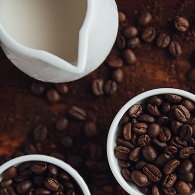
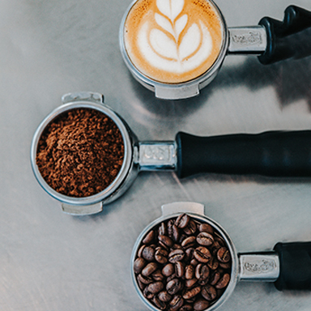
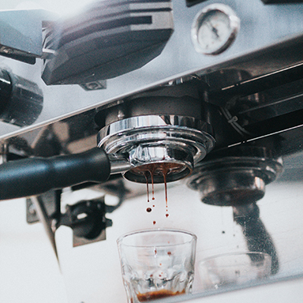
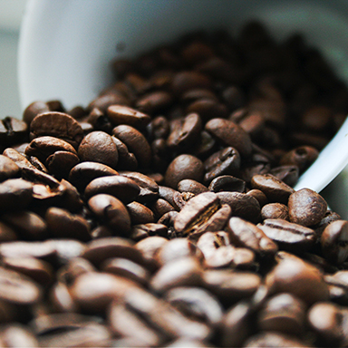

コーヒー豆
コーヒー豆は、コーヒーノキから採れる、コーヒーチェリーというフルーツの「種」です。
コーヒーノキ、コーヒーチェリーという響き、とても可愛らしくありませんか？

焙煎
コーヒーは、生豆の状態から焙煎することで見慣れたコーヒー豆の姿になります。
バリスタが１番気を遣う、腕を問われる行程だそう。最もコーヒーの味に関わる部分です。

淹れ方
私は朝、起き抜けの一杯を飲むときに、焙煎しておいた豆を挽くことにしています。
粉に挽いた時にふわっと香りがたち、優しく起こされているような心地になります。

豆知識
コーヒーは美味しいだけじゃありません。
炭酸ガスの含有量が多く、臭い消しの効果があったり
実はアンチエイジングにも効くんです。
プロフィール
あなたはどんなシーンでコーヒーを飲みますか？朝、起き抜けに一杯飲むのか、食後に飲むのか。シチュエーションによって“美味しいコーヒー“って変わるんじゃないでしょうか。